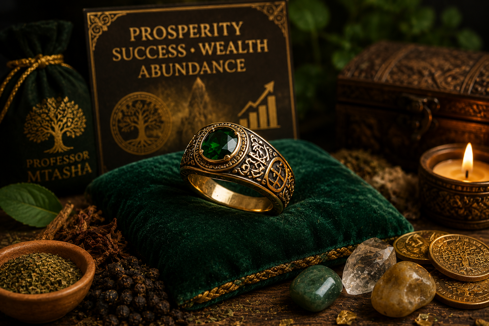

Attract wealth and abundance into your life. Our specially crafted lucky rings are infused with powerful herbal extracts and planetary energies to bring financial stability, business success, and family prosperity. Each ring is unique and personalized based on your astrological chart and specific needs.
Lucky rings have been used for centuries in African and Eastern traditions to attract wealth, protect against poverty, and open doors of opportunity. Professor Mtasha combines these ancient wisdom traditions with modern understanding to create powerful prosperity tools.
Benefits of wearing a lucky ring:
We start with a detailed astrological reading to determine the best materials, stones, and energies for your unique prosperity profile. This reading considers your birth chart, current planetary positions, and specific financial goals.
Our master craftsman creates the ring using high-quality materials while our master herbalist prepares a powerful infusion of prosperity herbs. The ring is then activated during a planetary alignment ceremony, channeling cosmic energies to attract wealth and abundance.
Each ring is inscribed with symbols of prosperity and abundance, personalized to your specific needs. You'll receive detailed guidance on how to wear and care for your ring to maximize its power and effectiveness.
Why choose Professor Mtasha? With over 20 years of experience in astrological work and prosperity rituals, Professor Mtasha has helped thousands of people achieve financial success. His lucky rings are crafted with care, infused with genuine power, and backed by a reputation for effectiveness.
Watch: Lucky Ring Activation Ceremony — Channeling prosperity energies.
Q: Can anyone wear a lucky ring?
A: Yes, lucky rings are suitable for anyone seeking prosperity. The materials and energies are tailored to your individual astrological profile.
Q: How long does the ring take to work?
A: Many clients experience positive changes within days, with significant results manifesting over weeks to months. The ring's energy grows stronger with regular wear.
Q: Can I wear the ring every day?
A: Yes, we recommend wearing your lucky ring daily for the best results. The ring is designed for daily wear and comfort.
Q: What materials are used in the ring?
A: We use high-quality metals (silver, gold, or bronze) and natural stones chosen based on your astrological needs and personal preference.
Q: How long does the ring's energy last?
A: With proper care and regular cleansing, your ring's energy will remain powerful for years. We offer re-activation services if needed.
"I was struggling financially when I received my lucky ring from Professor Mtasha. Within weeks, new opportunities appeared, and my business started growing. This ring is truly blessed."
— Thomas W., Nairobi
"My lucky ring has changed my life. I received a promotion, and my investments started performing well. Professor Mtasha's work is remarkable."
— Monica A., Mombasa